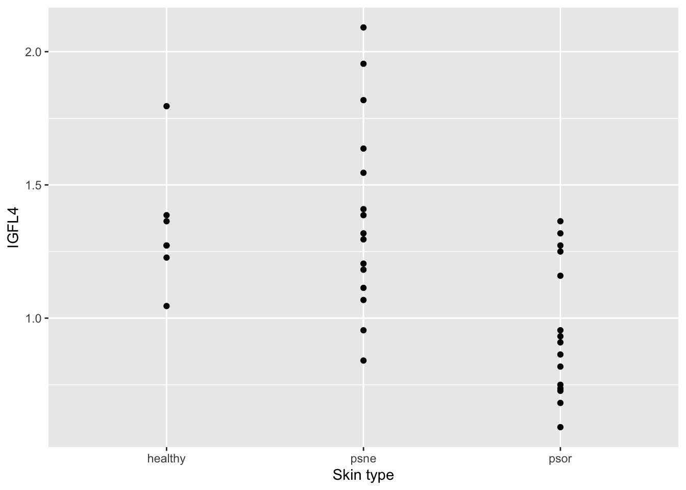

#install.packages("tidyverse")
#install.packages("readxl")
#install.packages("emmeans")
library(tidyverse)
library(readxl)
library(emmeans)V. Applied Statistics in R (presentation)
Structure of a biostatistical analysis in R
The very basic structure of an R script doing a classical statistical analysis is as follows:
- Load packages that you will be using.
- Read the dataset to be analyzed. Possibly also do some data cleaning and manipulation.
- Visualize the dataset by graphics and other descriptive statistics.
- Fit and validate a statistical model.
- Hypothesis testing. Possibly also post hoc testing.
Of course there are variants of this set-up, and in practice there will often be some iterations of the steps.
In this manuscript, we will exemplify the proposed steps in the analysis of a simple dataset:
- In our current scenario, you are a researcher investigating psoriasis, an inflammatory skin disease. You have data on the expression of a number genes that are suspected to have something to do with the disease, but you cannot be sure until you perform some formal statistical analysis.
- This is a great example where R skills would come very handy!
- You will start with your gene of special interest IGFL4. IGFL4 belongs to the insulin-like growth factor family of signaling molecules that play critical roles in cellular energy metabolism as well as in growth and development.
- You decide that your analysis approach will be one-way ANOVA of the expression of the IGFL4 gene against the skin type in psoriasis patients.
Load packages
We will use ggplot2 to make plots, and to be prepared for data manipulations, we simply load this together with the rest of the tidyverse.
The psoriasis data are provided in an Excel sheet, so we also load readxl. Finally, we will use the package emmeans to make post hoc tests.
Remember that you should install the wanted packages before they can be used (but you only need to install the packages once!).
Thus,
Now, we are done preparing for our analyses. Next, we will look specifically at the possible association between IGFL4 gene expression and psoriasis.
Please refer to the ‘STATS CHEAT SHEET’ provided in the slides for hints as well as other cheat sheets provided in other sessions where necessary.
Example: Analysis of variance
Step 1: Data
Psoriasis is an immune-mediated disease that affects the skin. You, as a researcher, carried out a micro-array experiment with skin from 37 people in order to examine a potential association between the disease and a certain gene (IGFL4). For each of the 37 samples the gene expression was measured. Fifteen skin samples were from psoriasis patients and from a part of the body affected by the disease (psor); 15 samples were from psoriasis patients but from a part of the body not affected by the disease (psne); and 7 skin samples were from healthy people (control).
The data are saved in the file psoriasis.xlsx. At first the variable named type (i.e. skin sample type) is stored as a character variable, we change it to a factor (and check that indeed there are 15, 15 and 7 skin samples in the three groups).
# Read in the data from Excel file and call it psoriasisData
psoriasisData <- read_excel("../../Data/psoriasis.xlsx")
# View the top rows of the dataset
head(psoriasisData)# A tibble: 6 × 12
type IGFL4 GeneA GeneB GeneC GeneD GeneE GeneF GeneG GeneH GeneI GeneJ
<chr> <dbl> <dbl> <dbl> <dbl> <dbl> <dbl> <dbl> <dbl> <dbl> <dbl> <dbl>
1 psne 0.841 2.94 3.16 4.21 -0.476 4.20 0.335 5.20 0.167 2.00 4.62
2 psne 0.955 2.67 3.23 6.09 0.121 3.66 1.28 5.52 0.0580 2.06 4.35
3 psne 1.07 2.53 2.80 4.48 -0.165 3.90 1.18 5.40 -0.202 1.95 2.57
4 psne 1.11 3.56 2.53 4.97 0.139 2.92 0.744 4.98 -0.329 2.03 3.17
5 psne 1.18 3.48 2.79 4.74 -0.102 3.04 0.513 5.48 -0.116 2.04 3.61
6 psne 1.20 2.94 3.12 4.20 -0.200 3.46 0.472 3.95 -0.129 1.55 3.56# Extract the data of interest containing the IGFL4 expression levels and skin sample type from the dataset and call this subset psorData
psorData <- select(psoriasisData, type, IGFL4)
# View the top rows of the dataset psorData
# Change variable named 'type' to factor so that we can use in our analysis in the next steps
# First let's check if it is character
is.character(psorData$type)[1] TRUE# Now change to factor
psorData <- mutate(psorData, type = factor(type))
# Again, let's check if it is factor now
# Check that there are 15, 15 and 7 skin samples in the three groups. Hint: count()QUESTION 1: According to your count summary table, are there 15 (psor), 15 (psne) and 7 (healthy) skin samples in the three groups? Please share your answer here: https://www.menti.com/alhf674h4r88
Step 2: Descriptive plots and statistics
To get an impression of the data, we make two plots, and compute group-wise means and standard deviations. Make (1) a plot showing three groups of skin samples (healthy, psne, psor) and IGFL4 expression levels from each skin sample so that we can visually compare each group of samples with regards to IGLF4 expression levels; (2) a boxplot for the same group-wise comparison. And finally, obtain the group-wise (healthy, psne, psor) descriptive statistics (mean, median and standard deviation). Hint: Consider using ggplot and tidyverse!
# (1) a plot showing three groups of skin samples (healthy, psne, psor) and IGFL4 expression levels from each skin sample
ggplot(psorData, aes(x=type, y=IGFL4)) +
geom_point() +
labs(x="Skin type", y="IGFL4")
# (2) a boxplot for the same group-wise comparison. Hint: geom_boxplot()
# And finally, obtain the group-wise (healthy, psne, psor) descriptive statistics (mean, median and standard deviation). Hint: group_by()QUESTION 2: Please rank the three groups by their mean/average IGFL4 expression (descending order). Just visually assess the values and write down the order of the groups. Please share your answer here: https://www.menti.com/alhf674h4r88
Step 3: Fit of oneway ANOVA
The scientific question is whether the gene expression level of IGFL4 differs between the three types/groups. Thus, the natural type of analysis is a oneway analysis of variance (ANOVA). The oneway ANOVA is fitted with the lm() function in R. It is a good approach to assign a name (below oneway) to the object with the fitted model. This object contains all relevant information and may be used for subsequent analysis. Note that we need to logarithmic transform the response (i.e. IGFL4 expression levels) as intensities are often on a multiplicative scale.
# oneway analysis of variance (ANOVA)
oneway <- lm(log(IGFL4) ~ type, data=psorData)
# View the model coefficientsQUESTION 3: Are you done? Please share how you feel here: https://www.menti.com/aldoypm5u6wr
Step 4: Hypothesis test + Post hoc tests
It is standard to carry out an \(F\)-test for the overall effect of the explanatory (i.e. independent) variable. To be precise, the hypothesis is that the expected values are the same in all groups. The most easy way to do this test is to use drop1. The option test="F" is needed to get the \(F\)-test using that function:
# Carry out an $F$-test for the overall effect of the explanatory (i.e. independent) variableQUESTION 4: What is your conclusion from the \(F\)-test result? Please share your answer here: https://www.menti.com/ali6bnwoiky7
It might be that the gene expression in two of the three groups may or may not be significantly different. To investigate that we do post hoc testing. This is nicely done within the framework of estimated marginal means using the emmeans package. Here emmeans makes the estimated marginal means (that is the predicted gene expression IGFL4 on the log scale), and the pairs() command provide post hoc pairwise comparisons (package automatically adjusts for multiple comparisons using the default tukey method):
# Run emmeans
emmeans(oneway,~type) type emmean SE df lower.CL upper.CL
healthy 0.2791 0.0938 34 0.0885 0.4696
psne 0.2963 0.0641 34 0.1662 0.4265
psor -0.0788 0.0641 34 -0.2090 0.0513
Results are given on the log (not the response) scale.
Confidence level used: 0.95 # Perform post hoc pairwise comparisonsQUESTION 5: What is your conclusion from the pairwise comparisons? Please share your answer here: https://www.menti.com/ali6bnwoiky7